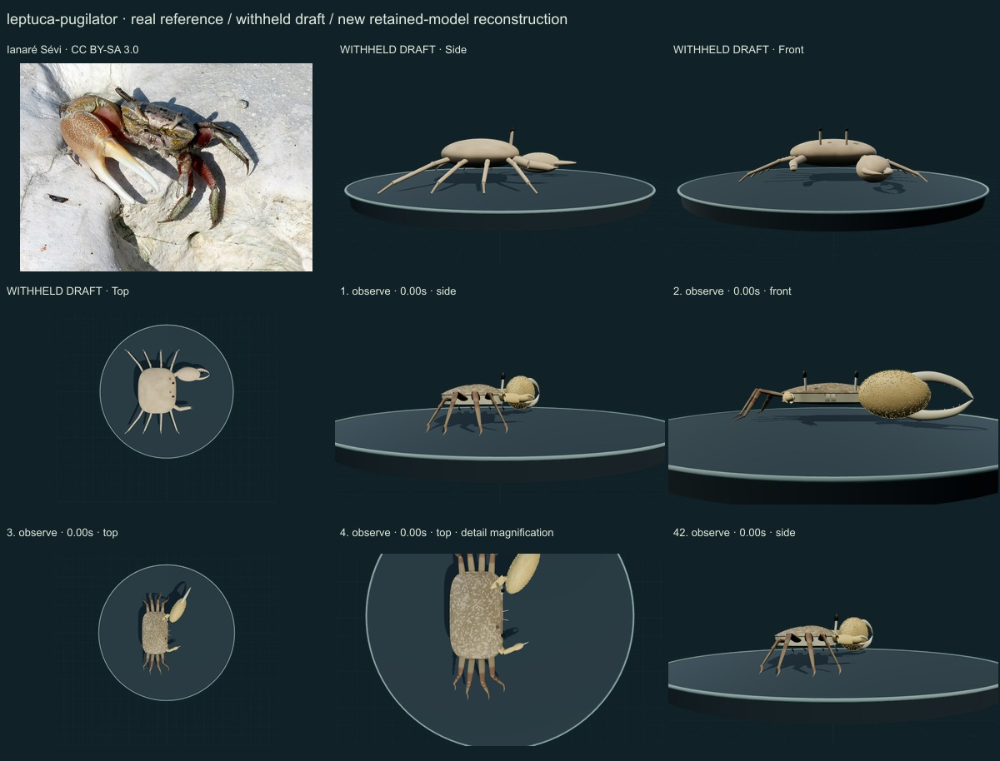
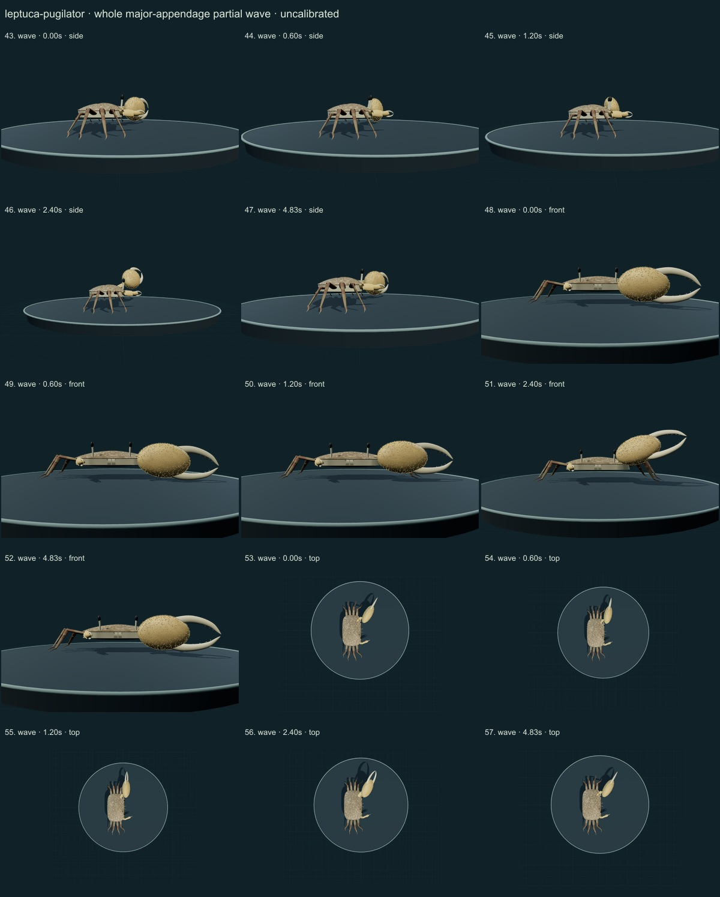
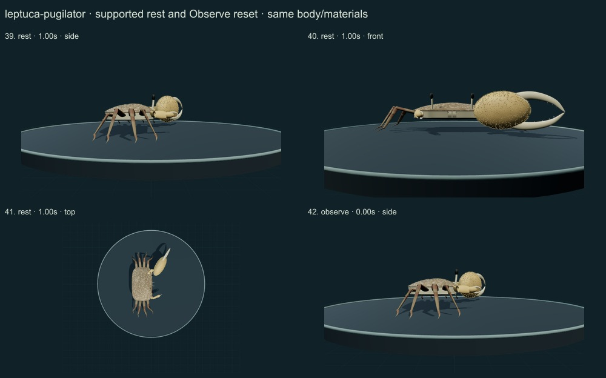
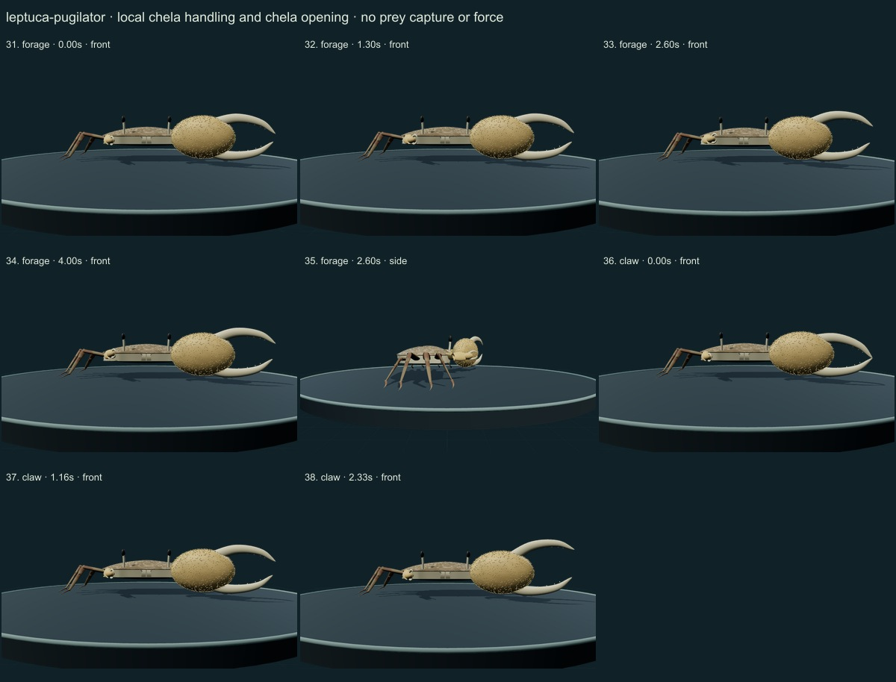
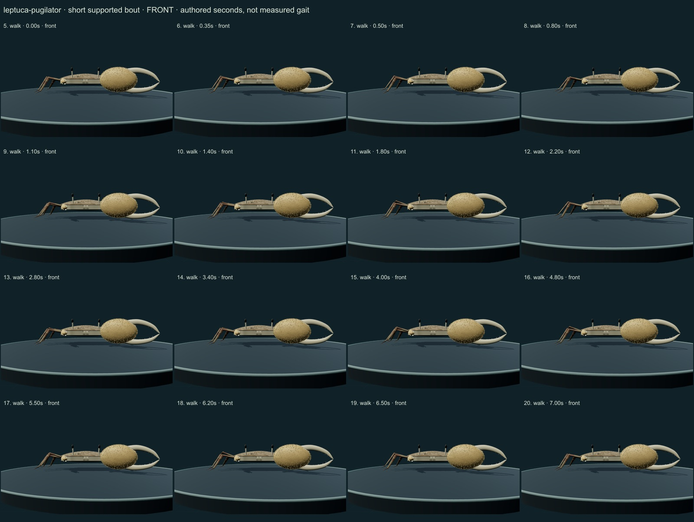
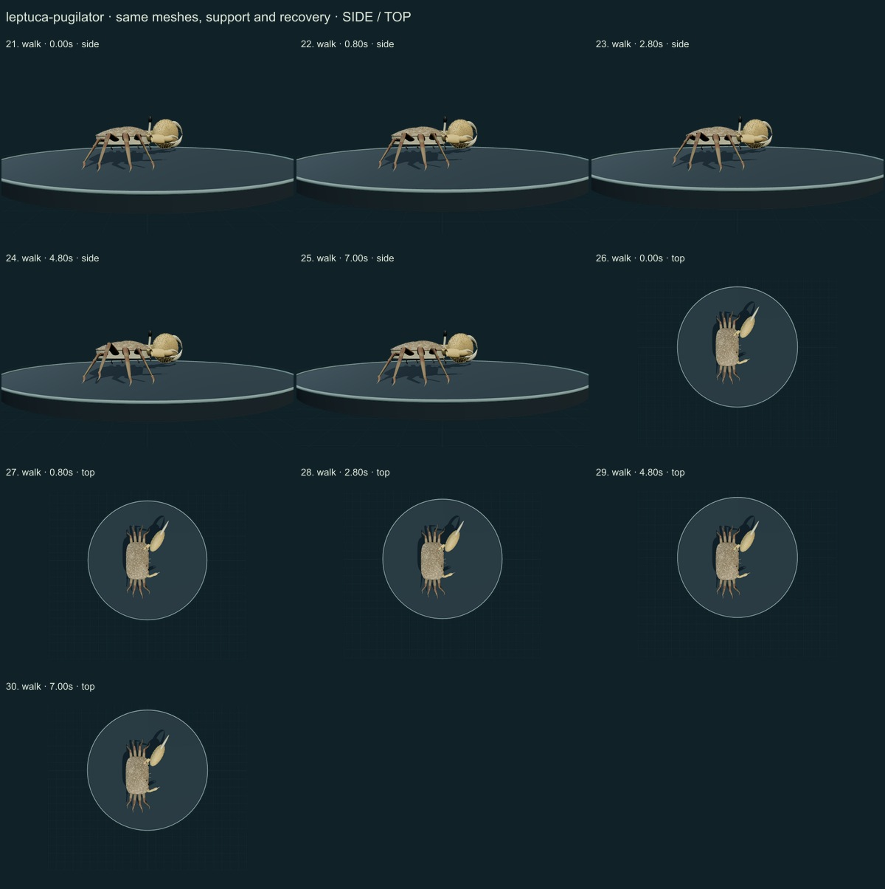

PhenoVoxel Archive · v0.6.19 · October 24, 2026
Atlantic sand fiddler crab · individual initial correction
This five-species release reaches 262 after verified publication. 38 saved drafts remain withheld; 288 species remain to 550, including 250 without saved drafts. Release register. Fine anatomy and biological dynamics remain partial, unmeasured and independently unvalidated.
Selected freely readable publisher sections of Pratt&McLain2002 on historical Uca pugilator, now Leptuca pugilator, were read. Major display versus minor feeding roles and coordinated wave context are distinguished. Ianare Sevi's CC BY-SA3.0 photograph was compared. No measured wave rate, coupled major-side leg extension, mate response or force was imported.
Ianaré Sévi · CC BY-SA 3.0. Ianaré Sévi source labels a fiddler crab at a burrow under the former Uca pugilator name. A large-clawed male phenotype is selected; taxon identity, handedness frequencies and individual dimensions are not independently redetermined. Leptuca pugilator is the same retained species concept, not an extra accession. Resized inside 1000 px, flattened and JPEG encoded; no generative alteration.
Exact source/license/download/local checksums remain in the data. Photograph identity and capture conditions are not independently re-established. Generated photographs are not used.
A distinct broader-than-long shell, narrow long eye stalks, eight banded articulated walking legs, one greatly enlarged flattened male palm and a separate small handling claw replace the symmetric generic body. The major appendage has its own whole-arm articulation.
Muted olive/brown shell variation, darker limb bands, granular major-palm relief and narrow cream fingers replace uniform tan. The selected large-clawed male phenotype does not represent every sex or handedness.
Remaining: Front/orbit contours, exact claw allometry, finger dentition, leg asymmetry, joints and fine feeding setae remain unmeasured or incomplete. The major palm remains simplified. The source-labelled photo was not independently redetermined against sibling Leptuca species. Pattern/optics and waving trajectories are authored, not calibrated.
Supported lateral study, minor-claw handling, retained finger hinges, quiet support and a separate partial whole-major-arm lateral/circular lift. The display study does not reproduce the complete courtship signal or validated feeding.
No measured coordinates, natural playback rate, joint limits, forces, fluid dynamics, muscle, food contact, ingestion, sensory physiology or independent biological validation. Fixed-length/support checks establish internal software consistency only.
57 actual final nonblank side/front/top, enlarged and action/posture states inspected individually on labelled sheets against the authentic photograph and scoped sources. Superseded frames excluded. Qualitative author assessment, not independent expert certification.






No 90% accuracy score, measured biological rate, physiological simulation or independent specialist certification is asserted. Software checks are not empirical validation. The prior 257 species objects and credited wolf/tiger behavior meshes are unchanged. Original geometry/material/controller code is MIT; real reference photos retain their individual licenses. Primary-paper figures were consulted where accessible and linked, not redistributed. Modern taxonomy is retained; Protista/Monera are legacy reporting conveniences and recorded occurrences are not native-range boundaries.
Per-frame findings, source scopes and checksums · Live model